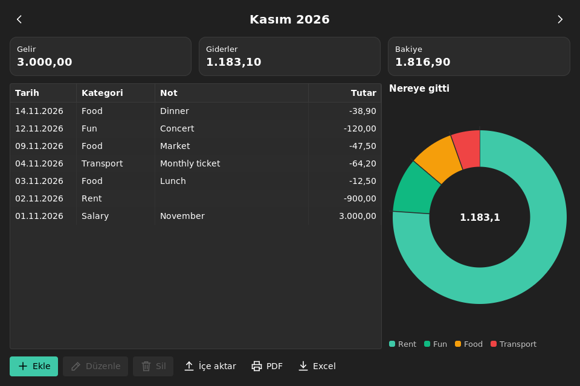

#19. Look and languages
Pocket works. Now it should feel at home: in the colors you choose, in the look of each platform, light or dark as the user likes, and in the user's language — with numbers and dates written the way they write them.
#The theme: assets/theme.toml
# The look: Fluent on Windows, Material on Android, Pastel elsewhere (handbook chapter 19)
style = "auto"
accent = "#0E7C66"
[dark]
accent = "#3FC9A8"
accent is the color of default buttons, selections, focus and the chart's first slice; [dark] gives the colors
for the dark theme. Other names: background, surface (cards, lists), text, text_muted, border, danger,
radius (the corners), font_size — the full list is in styles.md.
Pick an accent that has enough contrast with white text in the light theme and with the dark background in the dark one, and look at both before you decide (below).
#Light and dark
The main form says Appearance = System (chapter 15): light or dark as the computer or phone is set, and it follows
when the user switches while the app runs. Light or Dark fixes one. Try it: PASTEL_THEME=dark pastel run.

Colors you write yourself — like the dialog's red error text, Color = '#DC2626' — stay the same in both themes.
Keep them few, and choose ones that read on both backgrounds.
#A style for each platform
style = "auto" gives each platform its own look: Fluent on Windows (Windows 11's controls), Material on
Android, Pastel's own elsewhere. The style sets the sizes and shapes — round buttons on Android, a line under
the edits on Windows — and the order of a dialog's buttons. The same .pform gets each look with no change.
PASTEL_STYLE=material pastel run # Android's look on the computer
pastel preview src/forms/Home.pform -o fluent.png --style fluent
style = "fluent" would give every platform the Windows look, and a style file of your own in assets/styles/
changes any part of one (styles.md).
#Languages
#Texts in code: _()
Every text a user reads goes through _ (from Pastel.Lang): it gives the translation in the current language,
or the text itself when there is none.
ShowToast(Format(_('%d entries imported'), [Job.Entries.Count]));
Translate the whole sentence with its placeholders, never pieces glued together: _('%d entries imported'),
not IntToStr(N) + _(' entries imported'). Other languages put the number elsewhere, and translators need the
whole sentence to see what it means.
The texts of the .pform files — Text, Title, Hint, Placeholder, Items — are translated without _.
#The language files
pastel lang add tr # assets/lang/tr.json with every text of the project
pastel lang # after changes: adds the new texts, says what is not translated yet
pastel lang finds the texts in the .pform files and in every _('...') call. Pocket's Turkish file starts:
{
"%d entries imported": "%d kayıt içe aktarıldı",
"Add": "Ekle",
"Amount": "Tutar",
"Balance": "Bakiye",
"Cancel": "Vazgeç",
...
The app uses the computer's language when there is a file for it. To try another: PASTEL_LANG=tr pastel run. In
code, UseLanguage('tr') switches.
#Numbers, dates and months
A language is more than words. Turkish writes 1.234,50 for 1,234.50, 03.11.2026 for 11/3/2026, and Kasım
for November. Pastel.Lang does these:
program Formats;
{$mode objfpc}{$H+}
uses
SysUtils, Pastel.Lang;
procedure Show;
begin
WriteLn(Language, ': ', FormatNumber(1234.5, 2), ' ', FormatDateShort(EncodeDate(2026, 11, 3)), ' ',
MonthName(11));
end;
begin
Show;
UseLanguage('tr');
Show;
UseLanguage('de');
Show;
end.
en: 1,234.50 11/3/2026 November
tr: 1.234,50 03.11.2026 Kasım
de: 1.234,50 03.11.2026 November
UseLanguage sets the formats even when there is no translation file — de has its numbers and dates here, and its
month names once a de.json gives them (November is the same word in German anyway).
This is why Pocket's app writes money with its own little function:
{ an amount the way the user's language writes it: 1,234.50 or 1.234,50 }
function Money(Amount: Currency): string;
begin
Result := FormatNumber(Amount, 2);
end;
and not with FormatMoney of chapter 7, which always writes 1,234.50. FormatMoney stays right for the command
line and the files — data should look the same everywhere; only what people read changes with the language. The grid
(chapter 16) does the same on its own: its Money and Date columns get the values and show them in the user's
language.
Reading what people type follows the language too: TCurrencyEdit reads 12,50 in Turkish, and TryParseNumber
does the same in code.
#Exercises
- Change the accent to a color of your own, for the light and the dark theme. Look at both with
pastel preview(and its--dark). - Run Pocket with
PASTEL_STYLE=materialandPASTEL_LANG=trtogether, and with the dark theme. - Add a language of your own with
pastel lang add, and translate five texts. What does the app show for the rest? - ★ Find a text in
Home.pasthat would not translate well, and fix it.